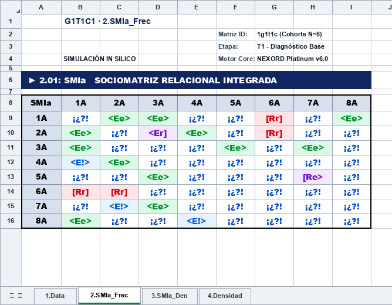
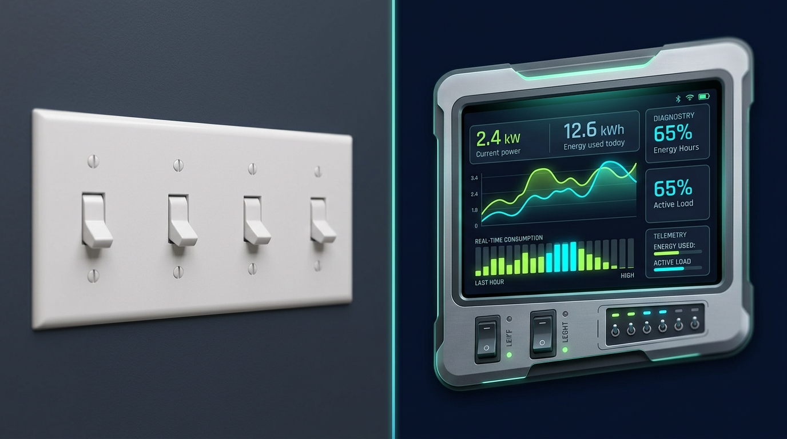

Génesis de un Grupo
GÉNESIS
Autoorganización dinámica de 8 sujetos desde el vacío inicial hasta la cristalización del sistema relacional.
Observación fenomenológica de vínculos, autoorganización relacional y contraste metodológico continuo a través de 5 experiencias guiadas.

El lenguaje matemático de lo humano en 6 conceptos simples. Haz clic en cualquiera para abrir su figura y explicación a pantalla completa.
"Para realizar esta actividad conjunta..."
"Pon en una lista ordenada a todo el grupo 1º, 2º, 3º..."
Matrices de cualidad y orden: SMIa y SMIb
| 1A | 2A | 3A | 4A | 5A | |
|---|---|---|---|---|---|
| 1A | — | ||||
| 2A | — | ||||
| 3A | — | ||||
| 4A | — | ||||
| 5A | — |
Núcleo relacional en línea: pDA · DA · RC · pRC
Tránsito de las frecuencias brutas al balance termodinámico

El espectro de densidades socio-termodinámicas
Diseño Canónico G1T1C1 (Grupo N=5: 1A1a .. 5A1a · Escenario 2 Subgrupos y 1 Mezclador). Plano 1-2 Isométrico con Aspa a Toda Pantalla (45º y 135º):
• Frecuencias de Moreno: saldo plano discreto que aplana al grupo en una sola diagonal y etiqueta a 3A1a como aislado.
• Densidades VISORD: campo continuo socio-termodinámico que discrimina la energía emitida (A2) de la devuelta (A3), revela el contrapoder local en 4A1a, detecta la máxima masa inercial en 3A1a (BDR=49.90, Φ=89.93) e integra las metapercepciones deducidas (aE y oE).
Muestras de interpretación estadística experta estructuradas en 3 niveles de análisis con Diagnóstico, Recomendaciones y Pronósticos en distintos supuestos.
La gran ventaja metodológica de VISORD: analizar simultáneamente diseños complejos en un espacio cúbico tridimensional unificado a través de tres ejes ortogonales: Grupos (Gx: 2 grupos), Tiempos (Ty: 3 cortes longitudinales Pre, Inter y Post) y Criterios (Cz: 2 dimensiones relacionales), integrando de forma continua 12 matrices sociométricas M(g,t,c).
M(g,t,c) es una matriz sociométrica individualizada extraída del cubo (12 vóxeles en diseño G2 × T3 × C2).